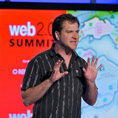
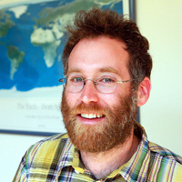

Intensive, hands-on training on tools to build and manage location data for location based services
About the Workshop
Around 95% smartphone users around the world - which translates to about 468 million people - are using Location Based Services to look for points of interests, ATMs, restaurants, hotels and many other services. They are checking traffic status, and sharing locations and check-ins with friends on various social networks. In the last four years, this industry has grown six times, to a whooping $6 billion.
Cartonama Workshop will provide developers, neo-geographers and entrepreneurs working on location based services with hands-on training on advanced tools to manage and represent their geographic data.
The trainers will help participants to learn use of tools such as databases, tile servers, tile studios, Geocoding APIs, search APIs and JavaScript libraries through an application building exercise. The learning process is interspersed with lectures and discussion sessions on issues such as quality of geographic data, commercialization, licensing and privacy. For more details about the workshop sessions, visit the HasGeek funnel.
Speakers
Schuyler Erle
Free Software developer and evangelist for over fifteen years. He was a co-author of 'Mapping Hacks' and 'Google Maps Hacks'. He was also a co-founder of the OpenLayers and TileCache projects, and is a charter member of the OSGeo Foundation. He also works in the fields of wireless networking, intelligent search engines and the Semantic Web and was the lead developer of NoCatAuth which is an open source wireless captive portal. He built geocoder.us, which is an open source United States. address geocoder. More recently, Schuyler helped found the Humanitarian OpenStreetMap Team and serves on its Board of Directors. He currently resides in San Francisco.
Mikel Maron
Programmer and geographer working for impactful community and humanitarian uses of open source and open data. He is co-founder of Ground Truth Initiative, and of the Map Kibera project. He’s on the Board of the OpenStreetMap Foundation, and President of the Humanitarian OpenStreetMap Team, having helped to facilitate the OSM response to the Haiti earthquake. He’s travelled widely, organizing projects in India, Palestine, Egypt, Swaziland, and elsewhere. Previously, he co-founded Mapufacture and worked on collaborative platforms, and geoweb standards, with a wide spectrum of organizations from UN and government agencies to anarchist hacker collectives.
In 2008, Mikel Maron and Schuyler Erle conducted a series of workshops in India starting from Delhi to Ludhiana, Pune, Mumbai, Kerala and Bangalore. The workshop series inspired individuals like Arun Ganesh to develop maps and build applications. Arun and his friends mapped Chennai extensively and put the data together into busroutes.in. BusRoutes.in remains as one of the best examples of using crowdsourced geographic information to create applications that are useful.
Sessions - Day 1: Creating and Working with Location Data
| Registration and Breakfast | 08:00 AM - 09:00 AM | ||
| Introduction to OpenStreetMap | 09:00 AM - 09:30 AM | ||
| GPS Surveying for OpenStreetMap | 09:30 AM - 10:30 AM | ||
| Tea Break | 10:30 AM - 10:45 AM | ||
| Downloading from GPS | 10:45 AM - 11:00 AM | ||
 |
Editing Data for OpenStreetMap | 11:05 AM - 11:45 AM | |
| Tagging and Map features | 11:50 AM - 12:30 PM | ||
| Discussion | 12:35 PM - 12:50 PM | ||
| Lunch | 12:50 PM - 01:45 PM | ||
| Introduction to geographic concepts and file formats | 1:50 PM - 02:30 PM | ||
| Geo-enabled Databases / Understand PostGIS basics and MySQL spatial extension | 02:30 PM - 03:25 PM | ||
| Tea Break | 03:25 PM - 03:35 PM | ||
| Data Swiss Army Knives | 03:35 PM - 04:00 PM | ||
| Processing OpenStreetMap Data and Making Shapefiles | 04:00 PM - 05:00 PM | ||
| Hands On Lecture | |||
Day 2: Visualizing and Building Apps with Location Data
| Breakfast | 08:00 AM - 09:00 AM | ||
| Tiles | 09:00 AM - 09:30 AM | ||
| TileMill | 09:30 AM - 10:30 AM | ||
| Tea Break | 10:30 AM - 10:45 AM | ||
| Multi-lingual Tiles | 10:45 AM - 11:15 AM | ||
| Serving Tiles | 11:15 AM - 12:15 PM | ||
| Discussion | 12:15 PM - 12:30 PM | ||
| Lunch | 12:30 PM - 01:30 PM | ||
| JavaScript Mapping APIs | 01:30 PM - 02:30 PM | ||
| Geocoding and Location queries | 02:30 PM - 03:30 PM | ||
| Routing Fundamentals | 03:30 PM - 04:00 PM | ||

| Tea Break | 04:00 PM - 04:15 PM | |

| Putting it all together | 04:15 PM - 05:15 PM | |
| Hands On Lecture | |||
Why You Should Attend the Workshop
The workshop is only open to 30 participants. This is to ensure that the trainers can pay individual attention to each participant.
The workshop will train you with both back-end as well as front-end tools necessary for developing functional location based services and will enable you to build maps which can be used on devices ranging from phones to tablets to computers. It is aimed at teaching you the entire technology stack, right from managing the data to deploying the data on the server, and finally presenting it to your end user. During the hands-on sessions, you will develop web-based location services and learn how to manage your geographic data by creating interactive maps.
Mikel and Schuyler have extensive experience working with interactive maps, open data, Open Street Maps (OSM) and diverse communities on the ground. Participants will benefit immensely from the knowledge, experience and expertise of the trainers.
Registration
Tickets are priced at Rs. 10,000. Participants can register through the DoAttend portal. Or, you can pay offline through cheques and DD. Your ticket price covers workshop facilities and the facilitators' travel to India. The Centre for Internet and Society (CIS) has sponsored part of the workshop expenses.
Participants are expected to bring their own GPS devices / mobile phones and computers for the application building exercises.
If you have any queries, write to Sajjad Anwar.
Registration is closed
Venue
The workshop will be held at the Centre for Internet and Society (CIS), Bangalore. The congenial atmosphere at CIS facilitates both formal and informal interactions, and peer-to-peer learning.

No. 194, 2nd C Cross, 4th Main
Opposite Domlur Club
Domlur 2nd Stage, Bangalore - 560 071
About the Center for Internet and Society
The Centre for Internet and Society (CIS) is a Bangalore-based independent, non-profit research organisation. CIS is primarily involved in research on the Internet and its relationship to society. Through its academic and research programmes, campaigns, and advocacy, CIS brings together scholars, academics, students, programmers and scientists to engage in a large variety of issues concerning the Internet: from histories of the Internet to enhancing accessibility for persons with disabilities, openness, telecom and Internet governance, among others.
CIS is supporting the Cartonama Workshop by providing the venue and hosting the workshop facilitators in Bangalore.
About HasGeek
HasGeek was initiated in September 2010 to create discussion spaces for developers around emerging technologies. Our events are developer-focused. We began by organizing five editions of the DocType HTML5 conference in Bangalore, Chennai, Pune, Hyderabad and Ahmedabad.
In 2011, we organized a series of events in Bangalore starting with the Android Camp in April, PHP and Cloud Computing in June, JSFoo in October, and Droidcon India in November. Each of these events had an open talks submission and voting system, which made every event more participant-focused.
In 2012, we are attempting to reach out to a wider audience of developers, entrepreneurs and students, across large and small Indian cities, by addressing interesting technology problems such as UI Engineering, Data Science, SMS and email notifications, among others.